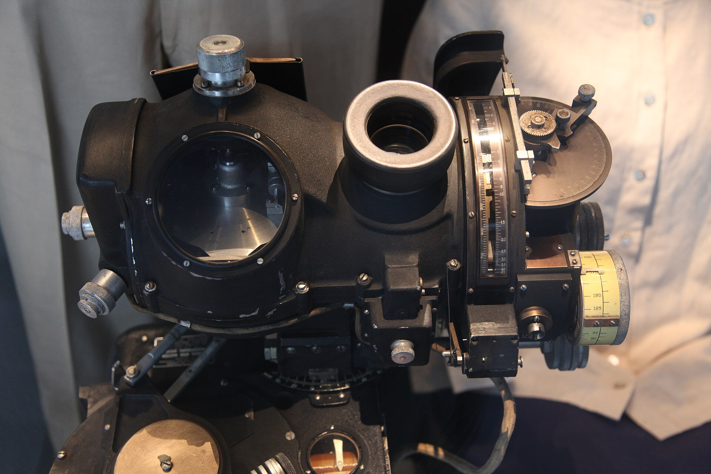
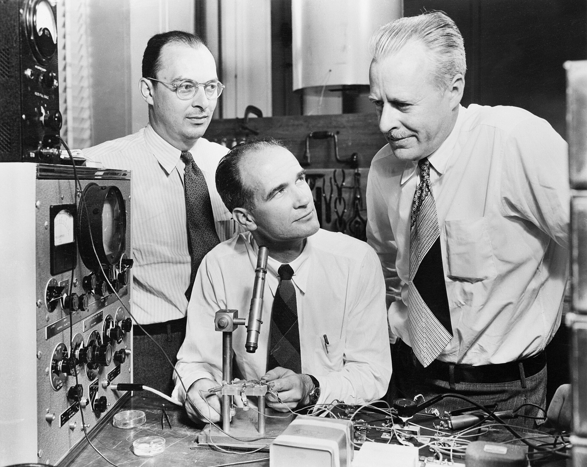
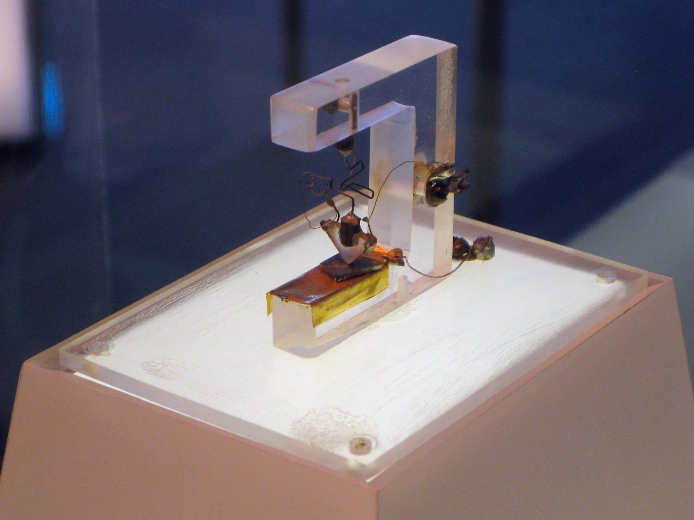
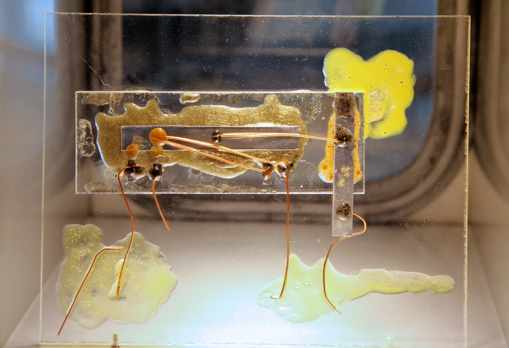
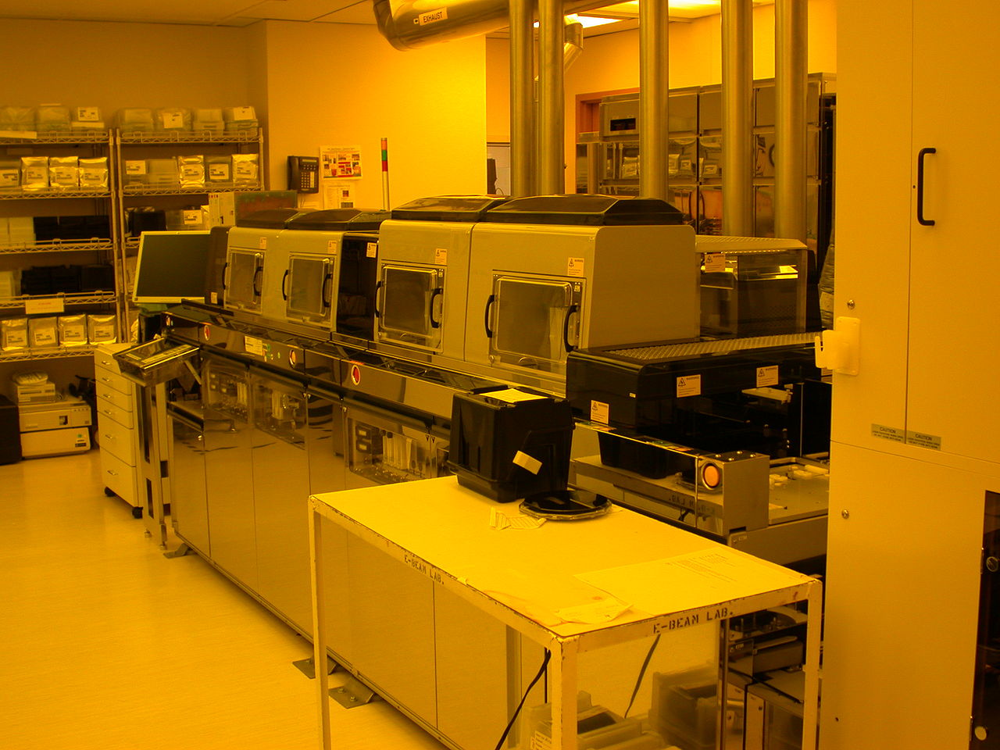
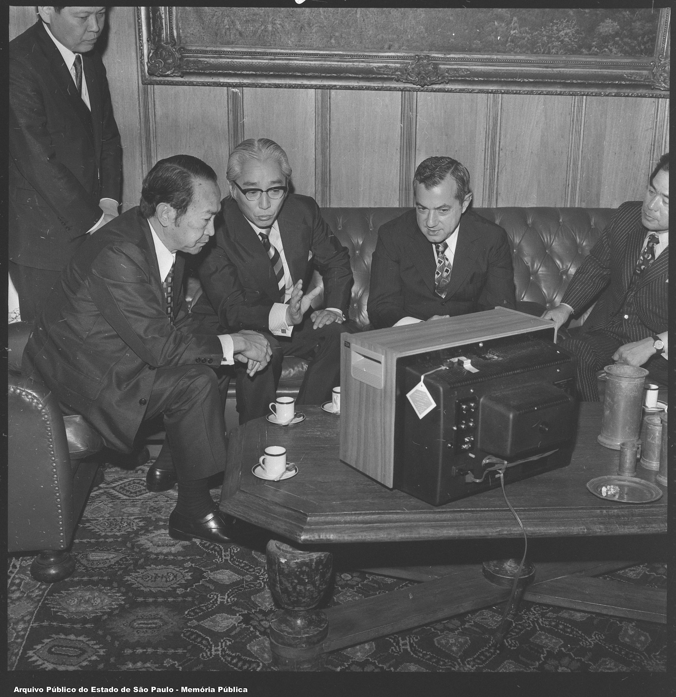
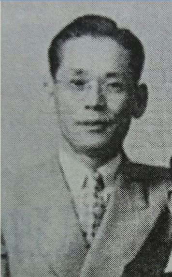
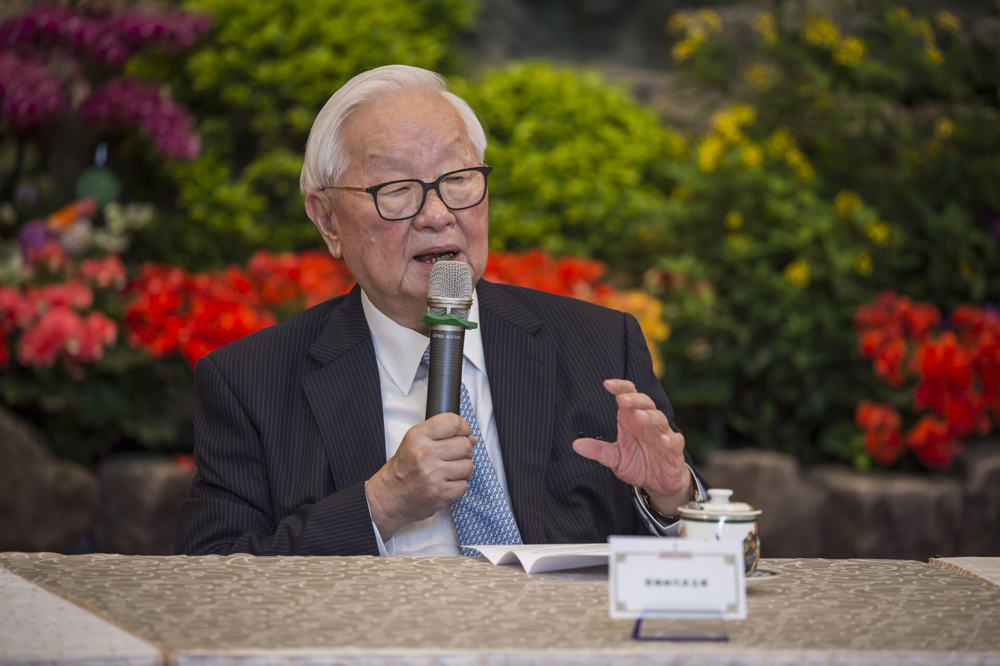
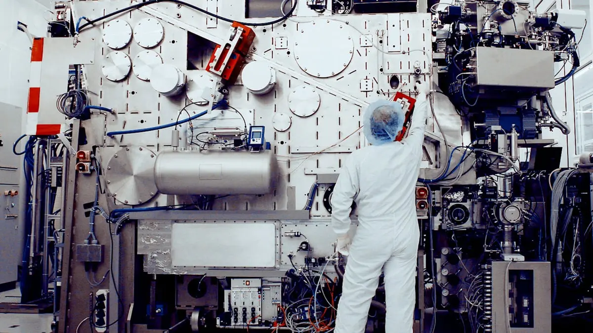

The Story of Chips
How humans learned to control electrical signals and made modern computation possible.
What are humanity's greatest inventions?
Suggest one invention. We will collect the class's ideas and vote.
A tiny switch becomes a source of power
No single invention changes the world by itself. It must be made reliable, manufactured at scale, paid for, and woven into human life.
Historical narrative adapted from Chris Miller, Chip War (2022).
Industrial power meets information
Factories still decided how many aircraft, ships, and tanks a nation could deploy. But radar, rockets, cryptanalysis, and precision instruments showed that calculation was becoming military power too.
A mechanical bombsight combined altitude, airspeed, wind, and geometry to estimate when a bomb should be released.

Why did computing need vacuum tubes?
A wire carries current and a resistor limits it, but neither lets one small signal control another, larger signal.
A triode vacuum tube introduced the crucial new ability: a small voltage at its control grid could regulate a much larger current, with no moving contact. It could therefore amplify a weak signal or act as a fast electronic switch.
ENIAC used roughly 18,000 such switches, gaining electronic speed at the cost of heat, power, size, and reliability.

Could a solid replace a vacuum tube?
- Glass enclosure and heated filament
- Bulky and power hungry
- Difficult to pack densely
- No heated filament
- Electrical behavior can be controlled
- Can be made tiny at scale
William Shockley believed the next switch would be built from a semiconductor: a material whose conductivity can be deliberately changed.
Brilliance, collaboration, and rivalry
Shockley was a gifted theorist and an abrasive colleague. In 1945 he proposed controlling current through silicon with an electric field, but his experimental device produced no useful measurable result.
John Bardeen's theoretical insight and Walter Brattain's experimental skill found a different route through the problem.

The current finally moves
Bardeen and Brattain placed two closely spaced gold contacts on germanium. A small signal at one contact controlled a larger current at the other.
The point-contact transistor proved that a solid-state device could amplify and control an electrical signal.
Further reading: Computer History Museum, “Invention of the Point-Contact Transistor.”

Frustration becomes a second design
Shockley's field-effect concept had failed experimentally.
Bardeen and Brattain demonstrated transistor action first.
Working intensely and privately, Shockley conceived the junction transistor.
His three-layer semiconductor “sandwich” could use a small input to control a much larger current: amplification, and also switching - on, off, on, off.
Who invented the transistor?
Shockley
Led the Bell Labs group and pursued a solid-state amplifier; after the point-contact breakthrough, he conceived the junction transistor.
Bardeen
Explained the surface-state barrier that defeated the earlier field-effect idea and co-developed the point-contact transistor.
Brattain
Designed and refined the experiments with Bardeen, creating the contacts that produced reliable amplification.
1956 Nobel Prize in Physics: Shockley, Bardeen, and Brattain shared the prize for semiconductor research and the discovery of the transistor effect. Nobel Prize record
A laboratory device is not yet an industry
A researcher demonstrates the effect.
Engineers control materials and processes.
Factories achieve acceptable yield.
Volume lowers cost and creates markets.
The decisive contest moved from discovering transistors to manufacturing millions of nearly identical ones.
Birth of Silicon Valley
Shockley left Bell Labs and founded Shockley Semiconductor Laboratory in California. He recruited exceptional young engineers, then drove eight of them away through suspicion and poor leadership.
The "traitorous eight" founded Fairchild Semiconductor and helped create Silicon Valley's startup culture.
Robert Noyce and Gordon Moore later left Fairchild to found Intel: “integrated electronics.”
Further reading: Michael S. Malone, The Intel Trinity, on Robert Noyce, Gordon Moore, Andy Grove, and the making of Intel.
Kilby and Noyce make the integrated circuit
Working independently, Jack Kilby and Robert Noyce eliminated the need for wires to connect transistors.
This made the silicon integrated circuit practical to manufacture at scale.
Although Kilby and Noyce are recognized as co-inventors of the integrated circuit, Noyce did not receive the Nobel Prize because he died before the prize was awarded.
2000 Nobel Prize in Physics: Kilby received half of the prize for his part in inventing the integrated circuit. Nobel Prize record
Further reading: T. R. Reid, The Chip: How Two Americans Invented the Microchip and Launched a Revolution.

Print circuits with light
Jay Lathrop and James Nall pioneered photolithographic techniques for semiconductor devices. Their work turned photographic patterning into a repeatable chipmaking method.
- Coat: cover the wafer with light-sensitive photoresist.
- Expose: project a circuit pattern through a photomask.
- Develop: reveal selected regions of the pattern.
- Process and repeat: etch or add material, one layer at a time.
Credit: Lathrop and Nall filed their semiconductor photolithography patent in 1957.

Military demand bought expensive first versions
High value was placed on smaller size, lower weight, and guidance capability.
Each production run teaches engineers how to reduce defects and cost.
Falling prices create new uses, which drive still greater production.
Smaller, cheaper, more widely used
Moore's Law described the industry's repeated increase in integrated-circuit complexity. It was not a law of nature; it became a shared target for an enormous industrial ecosystem.
Hard problems were solved across the world
No single country mastered every layer. Different communities solved different scientific, manufacturing, and systems-engineering challenges.
The danger of a “copy first” strategy
The USSR had world-class physicists and made major achievements in space and semiconductor research. Its microelectronics system, however, was secretive, centrally directed, and heavily oriented toward copying foreign designs.
Replication can close yesterday's gap. It is much less effective when manufacturing knowledge and designs are changing continuously.
Sony finds the consumers
Akio Morita and Masaru Ibuka of Sony saw that small, low-power transistors could make electronics personal and portable.
Sony licensed transistor technology, then competed through product design, manufacturing, and marketing.
Transistor radios turned a military-era technology into an object people could carry through daily life.

Bet the company on manufacturing scale
Samsung began as a trading business. In 1983, founder Lee Byung-chul committed the company to semiconductors despite the enormous cost and risk.
Government priorities, bank finance, large conglomerates, and relentless capital investment helped South Korea become a memory-chip powerhouse.

Manufacture for everyone, compete with no customer
Morris Chang proposed a dedicated foundry: TSMC would manufacture chips designed by other companies instead of selling competing chip designs of its own.
The model lowered the cost of starting a chip-design firm. It also concentrated advanced manufacturing expertise in one extraordinary company and island.
Further reading: Wesley Shu, TSMC: How One Company Came to Run the World's Chips.

ASML builds the tool behind the most advanced chips
ASML makes the world's most advanced chipmaking tools. Its leading systems use extreme ultraviolet light, or EUV, to print extraordinarily small circuit patterns on silicon wafers.
TSMC uses ASML's EUV machines to manufacture leading-edge chips designed by companies around the world.
The Dutch achievement combines optics, lasers, sensors, mechatronics, software, and a global supplier network into one reliable production system.
Further reading: “The world's most complex machine”, a detailed account of ASML and EUV lithography from Works in Progress.

Huawei helps make 5G a global reality
Huawei became a global leader in 5G telecom equipment, supplying radios, antennas, base stations, and networking systems used to carry mobile data.
Its success required difficult engineering across radio communication, signal processing, networking, semiconductors, software, and equipment that must operate reliably at enormous scale.
China demonstrated advanced capability in an entire communication system, not only in one component.
Further reading: Eva Dou, House of Huawei, a reported history of the company and its geopolitical importance.
From rare military component to invisible infrastructure
Humans gained remarkable capability while becoming deeply dependent on a technology most people never see.
No country makes an advanced chip alone
Specialization creates efficiency, but also dependence. A disruption at one hard-to-replace link can affect economies, public services, and national security.
A chip is condensed human organization
Inside a phone is not merely silicon. It is decades of accumulated knowledge, institutions, rivalry, cooperation, supply chains, and choices about who controls production.
Use one signal to control another path
This is a functional model, not a physical cross-section. A small control signal changes whether another electrical path conducts.
From here onward, we hide the device physics and reason with two states: 0 and 1.
Further study: NPTEL Basic Electronics by Prof. M. B. Patil, IIT Bombay, covers electronic devices and semiconductor fundamentals.
Connect switches to make a tiny decision-maker
0 or 10 or 1A logic gate hides its transistors and exposes only inputs, an output, and a rule.
How can we describe that rule precisely without discussing the internal transistors?
Boolean Algebra
The mathematics behind chip design